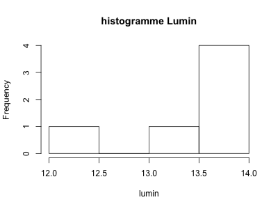
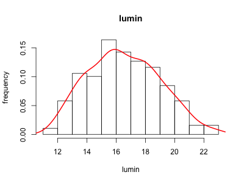

ORG MODE introduction (BIBS)!!!!
Table des matières
1 Latex pour les rapports
1.1 les formules de maths
Aliquam erat volutpat. Nunc eleifend leo vitae magna. In id erat non orci commodo lobortis. Proin neque massa, cursus ut, gravida ut, lobortis eget, lacus. Sed diam. Praesent fermentum tempor tellus. Nullam tempus. Mauris ac felis vel velit tristique imperdiet. Donec at pede. Etiam vel neque nec dui dignissim bibendum. Vivamus id enim. Phasellus neque orci, porta a, aliquet quis, semper a, massa. Phasellus purus. Pellentesque tristique imperdiet tortor. Nam euismod tellus id erat.
\begin{split} \mathscr{L} &= \prod_i f(x_i)\\ log(\mathscr{L}) &= \sum_i log(f(x_i))\\ X &\sim \mathcal{N}_{0,1} \end{split}1.2 Algorithmes
Pellentesque dapibus suscipit ligula. Donec posuere augue in quam. Etiam vel tortor sodales tellus ultricies commodo. Suspendisse potenti. Aenean in sem ac leo mollis blandit. Donec neque quam, dignissim in, mollis nec, sagittis eu, wisi. Phasellus lacus. Etiam laoreet quam sed arcu. Phasellus at dui in ligula mollis ultricies. Integer placerat tristique nisl. Praesent augue. Fusce commodo. Vestibulum convallis, lorem a tempus semper, dui dui euismod elit, vitae placerat urna tortor vitae lacus. Nullam libero mauris, consequat quis, varius et, dictum id, arcu. Mauris mollis tincidunt felis. Aliquam feugiat tellus ut neque. Nulla facilisis, risus a rhoncus fermentum, tellus tellus lacinia purus, et dictum nunc justo sit amet elit.
\begin{algorithm}[H] \Fn{gillepsie}{}{ \KwIn{\Protein{} Recepteur, \Protein{} Ligand, \Real{} score, \Entier{} tau} \KwOut{\Protein{} Ligand}\\ \tcp*[h]{On calcul si il existe un bon mouvement}\\ new-ligand, new-score $\leftarrow$ simulation(récepteur, ligand, score)\\ \uIf(\tcp*[h]{si on trouve un mouvement favorable}){new-socre < score}{ \Return{gillepsie(recepteur, new-ligand, new-score, tau)} } \tcp*[h]{On va diviser la distance entre les deux par \textit{tau}}\\ new-ligand $\leftarrow$ rapproche(ligand, tau)\\ new-score $\leftarrow$ score(récepteur, ligand)\\ \uElseIf(\tcp*[h]{aucun mouvement favorable}){tau < 15 et collision(récepteur, ligand)}{ \tcp*[h]{collision renvoi false si collision entre récepteur et ligand} \Return{gillepsie(récepteur, new-ligand, new-score, tau)} } \uElseIf(\tcp*[h]{mouvement trop grand}){tau < 15}{ \tcp*[h]{diminution du mouvement}\\ \Return{gillepsie(recepteur, new-ligand, new-score, tau+1)}\\ } \Return{ligand} } \caption{Gillespie} \end{algorithm}
2 Commandes R
2.1 Summary et autres calculs
Sortie du script R en verbatim.
dat <- read.table("./data/cafe.dat", header = T) summary(dat)
Origine Perte Lumin xa
Min. :1.000 Min. :11.87 Min. :15.06 Min. : 5.730
1st Qu.:1.000 1st Qu.:14.72 1st Qu.:19.78 1st Qu.: 8.620
Median :3.000 Median :16.41 Median :23.41 Median :10.010
Mean :2.974 Mean :16.55 Mean :24.03 Mean : 9.963
3rd Qu.:4.000 3rd Qu.:18.16 3rd Qu.:27.51 3rd Qu.:11.490
Max. :7.000 Max. :22.81 Max. :41.15 Max. :14.520
xb xy xgn
Min. : 6.33 Min. : 1.920 Min. :1.660
1st Qu.:12.06 1st Qu.: 2.890 1st Qu.:2.420
Median :16.29 Median : 3.790 Median :3.140
Mean :16.76 Mean : 4.249 Mean :3.464
3rd Qu.:20.89 3rd Qu.: 5.060 3rd Qu.:4.130
Max. :30.57 Max. :11.970 Max. :9.120
head(dat)
| Origine | Perte | Lumin | xa | xb | xy | xgn |
|---|---|---|---|---|---|---|
| 1 | 12.24 | 29.62 | 12.41 | 23.66 | 6.08 | 4.61 |
| 1 | 13.2 | 27.51 | 12.16 | 21.72 | 5.28 | 3.96 |
| 1 | 13.52 | 26.54 | 12.05 | 21.03 | 4.93 | 3.74 |
| 1 | 13.52 | 26.11 | 11.69 | 20.09 | 4.79 | 3.63 |
| 1 | 13.68 | 25.59 | 11.67 | 19.75 | 4.61 | 3.54 |
| 1 | 13.81 | 25 | 11.38 | 19.11 | 4.41 | 3.36 |
2.2 Figures sous R
2.2.1 Histogramme sur le tableau origin
On peut prendre en entrée pour un script R, un tableau dans le fichier org.
C'est pas un peu cool ça ?!
hist(origin$Lumin, main = "histogramme Lumin", xlab = "lumin")

Figure 2 : hist
2.2.2 Plot normal
On peut faire communiquer les blocs de codes entre eux. Pas besoin de déclarer
plusieurs fois le tableau dat.
plot(dat$Lumin, dat$Perte, main = "lumin vs perte", xlab = "lumin", ylab = "perte") lines(lowess(dat$Perte ~ dat$Lumin), col = "red", lwd = 2, xlim = c(0, 50))
Figure 3 : plot
2.2.3 Autres graphiques
hist(dat$Perte, prob = T, main = "lumin", xlab = "lumin", ylab = "frequency") lines(density(dat$Perte), col = "red", lwd = 2, xlim = c(0, 50))

Figure 4 : hist2
heatmap(cov(dat))
Figure 5 : heatmap
3 Commandes sql
Petit exemple de requête sql sur une base de données en local. Il suffit
de lui fournir les informations suivantes:
#+name: test_request #+header: :engine postgresql #+header: :dbhost localhost #+header: :dbuser postgres #+header: :dbpassword password #+header: :database postgres
select * from projet limit 10
| id | project.type | project.status |
|---|---|---|
| 1 | ChIP-Sequencing | incomplete |
| 2 | Chloroplast | Permanent Draft |
| 3 | Chloroplast | incomplete |
| 4 | Exome | incomplete |
| 5 | Genome fragments | complete |
| 6 | Genome fragments | incomplete |
| 7 | Metagenome | incomplete |
| 8 | Methylation | incomplete |
| 9 | Methylation | targeted |
| 10 | Mitochondria | Permanent Draft |
EXPLAIN ANALYSE select * from projet limit 10
| QUERY PLAN |
|---|
| Limit (cost=0.00..0.41 rows=10 width=72) (actual time=0.021..0.026 rows=10 loops=1) |
| -> Seq Scan on projet (cost=0.00..1.32 rows=32 width=72) (actual time=0.020..0.024 rows=10 loops=1) |
| Planning time: 0.665 ms |
| Execution time: 0.077 ms |
4 Schéma uml
Figure 6 : schéma uml
5 Programmation
5.1 Python

5.1.1 Fonction factorielle
def factorial(n): if n == 1: return 1 else: return factorial(n-1) * n factorial(10)
3628800
5.1.2 Autres
Comme pour R, les blocs de codes peuvent aussi communiquer.
def affiche(n): gen = (i for i in range(factorial(n))) return [i for i in gen] affiche(3)
[0, 1, 2, 3, 4, 5]
def affiche_table(table): result = np. for t in table: result.append(t) return result map(lambda x: round(4+x), affiche_table(origin)[0])
5.2 Haskell

main :: IO () main = do fibo 10 fibos = 0 : 1 : [ (+) x y | (x, y) <- (zip fibos (tail fibos))] fibo n = fibos !! n
55
5.3 C
int main(int argc, char *argv[]) { int N = 10; int i; for (i = 0; i < N; i++) { printf("hello %d\n", i); } return 0; }
| hello | 0 |
| hello | 1 |
| hello | 2 |
| hello | 3 |
| hello | 4 |
| hello | 5 |
| hello | 6 |
| hello | 7 |
| hello | 8 |
| hello | 9 |
5.4 Java
public class Hello { public int[][] pascal(int n) { int[][] score = new int[n][n]; int p; for (int i = 1; i < n; i++) { score[i][0] = 1; for (int j = 1; j < i; j++) { score[i][j] = score[i-1][j-1] + score[i-1][j]; } } return(score); } public void affiche(int[][] mat, int N) { for (int i = 0; i < N; i++) { for(int j = 0; j < N; j++) { System.out.print(mat[i][j]+"|"); } System.out.println(""); } } public static void main(String[] args) { Hello c = new Hello(); int[][] p = c.pascal(taille); c.affiche(p, taille); } }
| 0 | 0 | 0 | 0 | 0 | 0 | 0 | 0 | 0 | 0 |
| 1 | 0 | 0 | 0 | 0 | 0 | 0 | 0 | 0 | 0 |
| 1 | 1 | 0 | 0 | 0 | 0 | 0 | 0 | 0 | 0 |
| 1 | 2 | 1 | 0 | 0 | 0 | 0 | 0 | 0 | 0 |
| 1 | 3 | 3 | 1 | 0 | 0 | 0 | 0 | 0 | 0 |
| 1 | 4 | 6 | 4 | 1 | 0 | 0 | 0 | 0 | 0 |
| 1 | 5 | 10 | 10 | 5 | 1 | 0 | 0 | 0 | 0 |
| 1 | 6 | 15 | 20 | 15 | 6 | 1 | 0 | 0 | 0 |
| 1 | 7 | 21 | 35 | 35 | 21 | 7 | 1 | 0 | 0 |
| 1 | 8 | 28 | 56 | 70 | 56 | 28 | 8 | 1 | 0 |
5.5 Shell
ls -lah .
| total | 56 | |||||||
| drwxr-xr-x | 10 | vaiteaopuu | staff | 340B | 29 | jan | 11:20 | 0 |
| drwxr-xr-x | 7 | vaiteaopuu | staff | 238B | 28 | jan | 15:28 | .. |
| -rw-r–r-- | 1 | vaiteaopuu | staff | 1,0K | 29 | jan | 10:17 | Hello.class |
| -rw-r–r-- | 1 | vaiteaopuu | staff | 727B | 29 | jan | 10:18 | Hello.java |
| drwxr-xr-x | 3 | vaiteaopuu | staff | 102B | 28 | jan | 17:36 | auto |
| drwxr-xr-x | 3 | vaiteaopuu | staff | 102B | 29 | jan | 09:34 | css |
| drwxr-xr-x | 3 | vaiteaopuu | staff | 102B | 28 | jan | 16:23 | data |
| drwxr-xr-x | 16 | vaiteaopuu | staff | 544B | 29 | jan | 11:11 | images |
| -rw-r–r-- | 1 | vaiteaopuu | staff | 13K | 29 | jan | 11:20 | rapport.org |
| -rw-r–r-- | 1 | vaiteaopuu | staff | 474B | 29 | jan | 10:53 | test.hs |
cowsay ORG IS GREAT
______________
< ORG IS GREAT >
--------------
\ ^__^
\ (oo)\_______
(__)\ )\/\
||----w |
|| ||
cowsay "$(python ../markov/markov.py ../song2 3 2)"
________________________________________
/ l'amour sera loi \
| |
| ni facile, fais moi bête comme m'a |
| convoitisé |
| |
| les feuilles |
| |
| qu'à : "Méfie toi de ton de l'air du |
| poêle |
| |
| façon connu |
| |
\ ne mangions qu'un jour /
----------------------------------------
\ ^__^
\ (oo)\_______
(__)\ )\/\
||----w |
|| ||
5.6 Et pas mal d'autres langages …
| Language | Identifier |
|---|---|
| Asymptote | asymptote |
| C | C |
| Clojure | clojure |
| D | d |
| Graphviz | dot |
| Emacs Lisp | emacs-lisp |
| gnuplot | gnuplot |
| Java | java |
| LaTeX | latex |
| Lisp | lisp |
| Lua | lua |
| Mscgen | mscgen |
| Octave | octave |
| Oz | oz |
| Plantuml | plantuml |
| Python | python |
| Ruby | ruby |
| Scheme | scheme |
| Sed | sed |
| SQL | sql |
| Awk | awk |
| C++ | C++ |
| CSS | css |
| ditaa | ditaa |
| Emacs Calc | calc |
| Fortran | fortran |
| Haskell | haskell |
| Javascript | js |
| Ledger | ledger |
| Lilypond | lilypond |
| MATLAB | matlab |
| Objective Caml | ocaml |
| Org mode | org |
| Perl | perl |
| Processing.js | processing |
| R | R |
| Sass | sass |
| GNU Screen | screen |
| shell | sh |
| SQLite | sqlite |